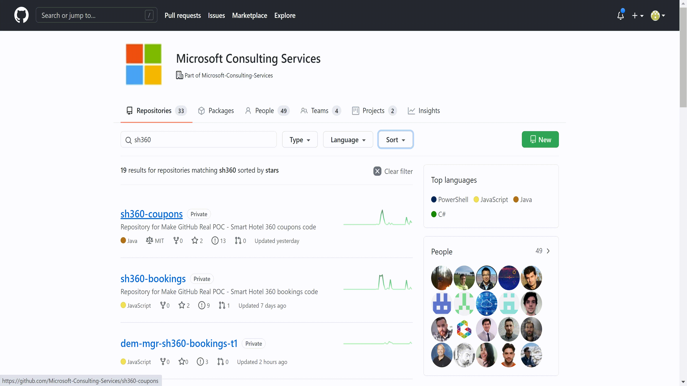
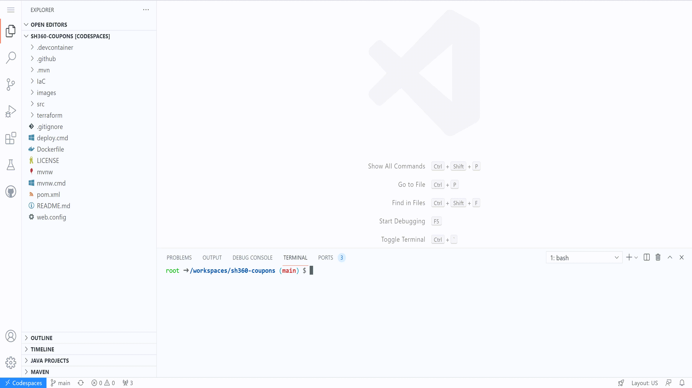
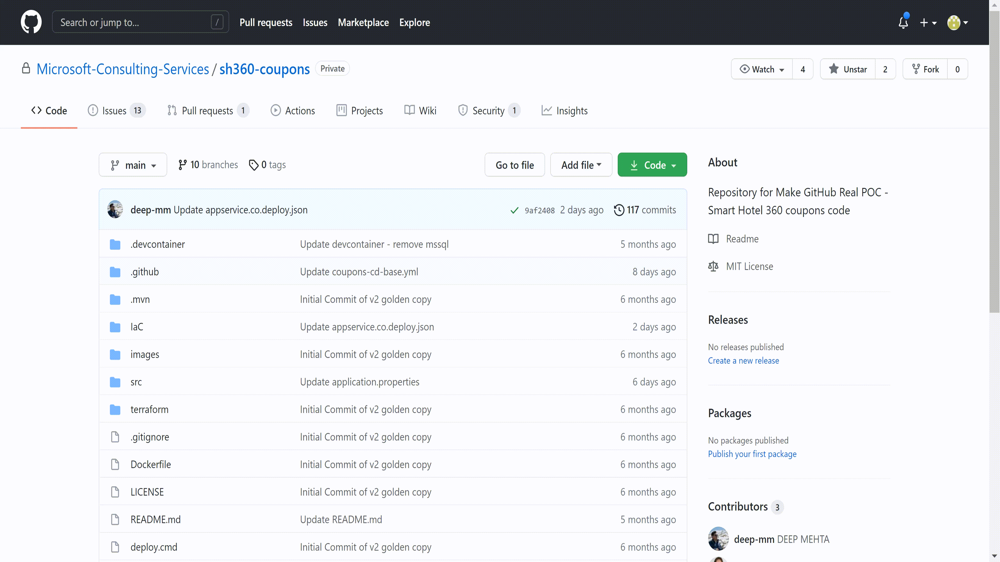

Home | Module 1 | Module 2 | Module 3
Module 2: Dynamic application security testing using OWASP ZAP
In this module, you will deep dive into Dynamic Application Security Testing using OWASP ZAP. You will add the job in the code and see the scans running in every environment. Before you get started, let's understand what is Dynamic Application Security Testing and how OWASP ZAP helps.
Dynamic Application Security Testing (DAST) is a process of testing an application in an operating state to find security vulnerabilities. DAST tools analyze programs while they are executing to find security vulnerabilities such as memory corruption, insecure server configurations, cross-site scripting, user privilege issues, SQL injections, and other critical security concerns.
OWASP ZAP: Zed Attack Proxy (ZAP) is a free, open-source penetration testing tool being maintained under the umbrella of the Open Web Application Security Project (OWASP). ZAP is designed specifically to test web applications, and it is both flexible and extensible.
At its core, ZAP is what is known as a “man-in-the-middle proxy.” It stands between the client’s browser and the web application so that it intercepts and inspects messages sent between browser and web application, tamper the contents if needed, and then forward those packets on to the destination. It can be used as a stand-alone application, and as a daemon process.
In this module, you will also deep dive into Security Verification Tests for Azure using Secure DevOps kit for Azure (AzSK). Before you get started, let's understand what is AzSk.
Secure DevOps kit for Azure (AzSK) is a collection of scripts, tools, extensions, automation, etc. that caters the end-to-end security needs in Azure, using extensive automation and frictionless integrations of security into the DevOps workflows. Usually, you are concerned about two things when it comes to security in Azure.
Exercise 1: Enable OWASP ZAP and AzSK scans
In this exercise, we will enable the OWASP ZAP scan in Coupons repo.
In the GitHub instance, navigate to the Coupons repo depending on your team allocation.
Go to the assigned repository based on step 1 above and open the GitHub Codespaces if you have one already created. If not, go ahead and select + New codespace.

Create a new branch from
mainusinguser/{user_id}/{purpose}type of schema.
Open the
/.github/workflows/environment-template.ymlfile. Search forAZSK_OWASP_Scanjob. Uncomment that block to enable the AZSK_OWASP_Scan stage. You can use shortcutCtrl + k + uto uncomment andCtrl + k + cto comment out a block of code.Now open the
.github/actions/continuous-security/action.ymlfile. This is the composite action that includes the set-up and execution of AzSK and OWASP tests. See how, as part of the action, we are first creating the Teams card for continuously collaborate.Commit your changes and create a Pull Request.

Link both, the commit and pull request, to the specific task in ADO by using the AB#{work_item_id} format. Put some meaningful description and put some reviewers from your team as shown below:

Once the pull requests is approved and checks have been passed, you can merge the changes into the main branch. As part of this merge, the CI workflow will be triggered again. If successfully executed, then the CD workflow will be triggered afterwards. Monitor the progress of the workflow from Actions tab.
Take a look at the logs to see if the OWASP scan and AzSK checks are successfully executed.
Exercise 2: View results for OWASP ZAP scan
In this exercise, we will view the results of the OWASP ZAP scan.
In the repo, navigate to issues tab and here you will be able to see the results.
You can filter the issues by author field value
github-actionsbot. Once the filter is applied you will be able to see the results of the OWASP ZAP scan.
Click on issue to see the details. You will be able to see information including the web application URL, New alerts reported by OWASP ZAP.The link to download the scan report is also available towards the end of the issues listing.
Click on the link to download the report. This will take you to the Actions tab. Navigate to the Artifacts section and you can see the zap_scan
Click on zap_scan and this will download the zip file. The zip file will have the scan report in HTML, JSON and MD file format. You can browse through the report to go through the issues reported and take appropriate actions based on recommended solutions to remediate the issues.

Exercise 3: View results for AzSk scan
In this exercise, we will view the results of the AzSk scan.
In the repo, navigate to actions tab and here you will be able to see the workflows along with the status.
Select the Countinuous delivery workflow and click on the recent run completed as part of exercise 1.
On the summary page, navigate to Artifacts section. You will be able to see the artifacts for the azsk scan named as "azsk". Click on it and this will download a zip file to your local.
Open the zip file and you will be able to see the scan results exported in the form of an excel sheet.

AzSk scan results have 4 different types of status.
Passed : These are automated checks by AzSk that have passed, and you should be happy seeing this.
Verify : For this type, look at the LOG file to get the supporting information that should help you to decide whether to consider the control as "Passed" or not.
e.g., For an RBAC control, you should look at the actual list of users and confirm that it is appropriate. Use the "Control Attestation" feature to record your attestation.
Manual : For this type, follow the steps using the Recommendation field in the CSV.
There will not be anything in the LOG file for "Manual" controls.
Failed : For this type, look at the LOG file and use the Recommendation field to address the issue.
e.g., If the 'external accounts (LiveId)' control has failed, the list of such external accounts found is displayed in the LOG file. Remove these using the cmdlet mentioned in the Recommendation field.
Depending on the status of the results, you can work on fixing the issues reported.
Key takeaways
ZAP sprawls your web application and constructs a map of your web applications’ pages and dependent resources. It records the requests and responses sent to each page, and creates alerts if there is potential issue with the request or response.
The OWASP ZAP results include issue description, along with CWE ID as well as recommended solutions to fix the issue.
The AzSK contains cmdlets that DevOps teams can use to regularly keep their cloud applications secure in various activities like prototyping, core solution development, integration and deployment. These scripts are called Security Verification Tests (SVTs) which cover all prominent features in Azure (e.g., Web Apps, Storage, SQL DB, Key Vault, etc.). Each SVT corresponds to a particular Azure feature or service, and automates checks for secure configuration and security best practices for that particular Azure service.
The AzSk results include issue description, status, resource group name, severity and recommendations to fix the issue.